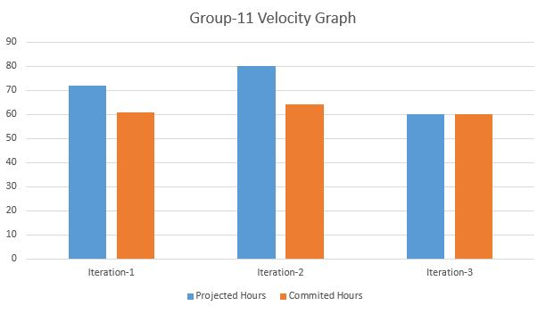

Our Vision
Student Life will be used to assist students manage their time by taking the thought out of deciding how to schedule their day. Like a personal assistant, Student Life will keep track of what tasks need to be done and automatically create a schedule for the user.
Target Audience
The primary intended users for this app are post-secondary students. This app specifically targets them because when making the change from secondary school to post-secondary, a great challenge students must overcome is learning how to manage their time effectively. This is in contrast to secondary school where students are given time to work during class, and the workload is far smaller. Therefore, post-secondary students would benefit from an app that would lessen the shock experienced from the increased workload and lack of in class study time.
Key Features
Keep Track of Your Tasks
Keep all your tasks in the todo list so that you never forget to finish that important assignment
Time Estimator
Get estimates for how long it will take to complete your tasks using our time estimator which supports a wide variety of tasks pertinent to students.
Different Calendar Views
Check the calendar to see what tasks you have planned for any given day so that you don't have to sift through a long list of tasks to find the ones most important to you.
Useful Links
Explore a list of useful links curated by experienced students that can help when you are struggling to grasp a particularly challenging topic.
Sales Pitch
Don't waste your time on time management. Let us do it for you.
Postmortem
During the iteration 2 retrospective, we did not have any new areas that needed improvement however, we discussed ways that we could further improve on the challenges we encountered in iteration 1. Those issues were largely centered around organizing our work in a way such that nobody is waiting for someone else to complete their task before someone else can begin theirs. Our solution to this problem was to write all of our interfaces in the first week so that group members could make assumptions about the code that other group members were working on. We also felt like too much was left to the last minute and we implemented stricter due dates for ourselves so that our work was completed sooner rather than later.
What went right in the development process
The best element that happened over the development process was our iterative approach to our workflow. For iteration 1 we still had code for important features being committed on the day the assignment was due. We immediately saw how this was not sustainable and proceeded to improve our organizational skills for the next iteration. For each iteration we've been getting our work done earlier and earlier which has allowed our final product to constantly be an improvement over the last.
How did the project change from your initial (iteration 0) vision or stories, or did it work out as predicted?
The main difference in between our initial vision and what we managed to complete was mostly down to the amount of time we had to commit. While our vision for the application has not changed at all, we did not get to develop certain features as much as we wanted. Our original goal was to develop a time estimator that used artificial intelligence to gradually become more accurate in predicting time costs based on a specific user's history. We were not able to complete the basic time estimator for iteration 1 which was then pushed back to iteration 2. As a result, the AI based time estimator was pushed back to iteration 3 when none of us had time to learn how to use an AI library due to our other commitments.
What did you learn about team or large project development? What will you start doing, keep doing, or stop doing next time?
The biggest thing we all learned throughout this project was the need for clear communication and organization that is consistent throughout the group. After iteration 1, we realized that a large part of why we were still making changes at the last minute was because of a lack of communication and team synergy. The way we solved this problem was through regularly scheduled meetings (1-2 times per week) and regular communication on our team's Discord server.
Velocity
Our velocity graph looks this way primarily due to two reasons. We overcommitted to the first two iterations since we were still learning how to accurately predict how much time it would take to implement specific features. That's why the projected hours match the committed hours in iteration 3, because we have experience from the previous two iterations to base our predictions. The second reason is because we often started working on features which later had to be pushed back which explains why we overpromised for the first two iterations. The last iteration however, we wanted to leave the app in a polished state, so we made it a point to only commit to features we were certain could get done.
